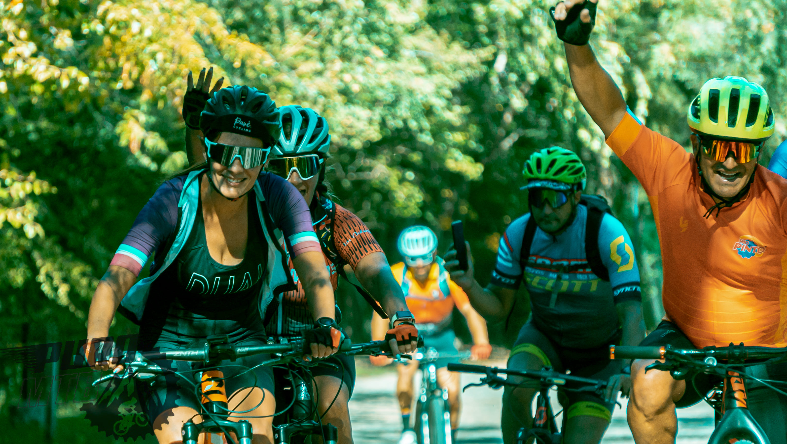

Travesia en San Luis
En el corazón de Argentina, las Sierras de San Luis se erguían majestuosas, un paisaje perfecto para desafiar con mi mountain bike. El sol se alzaba con un resplandor dorado sobre las cumbres, y así comenzó mi travesía por estos parajes llenos de misterio y belleza. El sendero se abría ante mí, serpenteando entre bosques de quebracho y algarrobo. Cada pedalada resonaba en el silencio de la naturaleza, acompañada por el canto de pájaros que saludaban mi paso. La frescura de la mañana se mezclaba con la promesa de aventuras por descubrir. A medida que ascendía por las colinas, las vistas se volvían más impresionantes. Desde lo alto, las Sierras de San Luis se extendían como una sinfonía de picos y valles, pintados con tonos verdes y ocres. La brisa acariciaba mi rostro mientras me sumergía en la inmensidad de este paisaje montañoso. Los descensos eran emocionantes, con caminos que se retorcían entre piedras y raíces. La bicicleta se convertía en mi aliada, sorteando obstáculos con gracia y potencia. La velocidad me hacía sentir libre, como si estuviera bailando con la montaña, desafiando la gravedad en cada curva. Las paradas eran oportunidades para contemplar la grandiosidad del entorno. En miradores estratégicos, me detenía para admirar lagunas escondidas y valles profundos que se perdían en el horizonte. Cada paraje contaba una historia, una narrativa tallada en las rocas y los árboles que me rodeaban. Durante las noches, acampaba bajo un cielo estrellado que iluminaba las Sierras de San Luis con una magia indescriptible. El fuego crepitaba, y las sombras de la hoguera danzaban en la oscuridad, creando un ambiente acogedor para compartir experiencias con otros amantes de la aventura. La travesía no solo era un desafío físico, sino también un encuentro con la cultura local. En pequeños pueblos serranos, conocí a lugareños cálidos que compartieron historias de la región y me guiaron hacia rincones secretos que no aparecían en ningún mapa. A medida que la travesía llegaba a su fin, me sumergí en un sentimiento de gratitud y realización. Las Sierras de San Luis me habían regalado más que un recorrido en mountain bike; me brindaron una conexión profunda con la naturaleza, la cultura y mi propia capacidad de superación. Así, con el eco de los senderos aún resonando en mis oídos, dejé las Sierras de San Luis llevando conmigo el espíritu aventurero y la inspiración que solo un viaje en bicicleta por estos paisajes podría brindar.